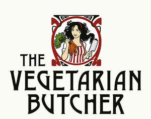

Trade Mark Journal No.2025/017 25 April 2025
UK00004187884 11 April 2025 (29,30,43)

- Class 29
- Meat substitutes; fish substitutes; poultry substitutes; vegetable-based cream; spreads made of vegetables, fruits, grain protein or meat substitutes; vegetable, legumes or soy based meat substitutes; preserved, frozen, dried and cooked vegetables; prepared salads; fruits and grain protein foods used as substitutes for meat; formed textured vegetable protein for use as a meat substitute; prepared dishes and meals based on meat substitutes; prepared dishes and meals based on fish substitutes; prepared dishes and meals based on poultry substitutes; frozen meals consisting primarily of vegetables; poultry substitutes; fish substitutes; snack foods based on nuts; snack foods based on vegetables; fruit and nut- based snack bars; nut and seed-based snack bars; tofu based snacks; soups; preparations for making soups; broth; preparations for making broths; jellies for food; jams; eggs; milk; cheese; butter; yoghurt; milk products; dairy substitutes; egg substitutes.
- Class 30
- Artificial coffee; cocoa; coffee; tea; rice; pasta; noodles; sushi; pasta-based prepared meals; rice-based prepared meals; noodle-based prepared meals; tapioca; sago; flour; preparations made from cereals; tacos; tortillas; cereal based snack foods; grain-based snack foods; rice-based snack foods; pizzas [prepared]; bread; pastries; confectionery; quiches; chocolate; ice-cream; sorbets; edible ice; sugar; honey; treacle; yeast; baking-powder; salt; seasonings; spices; preserved herbs; vinegar; sauces; food dressings [sauces]; mayonnaise; ketchup; mustard; sauces [condiments]; food flavourings made from lupins; food flavouring made from soy.
- Class 43
- Services for providing food and drink.
Unilever IP Holdings B.V.
Representative: Baker & McKenzie LLP